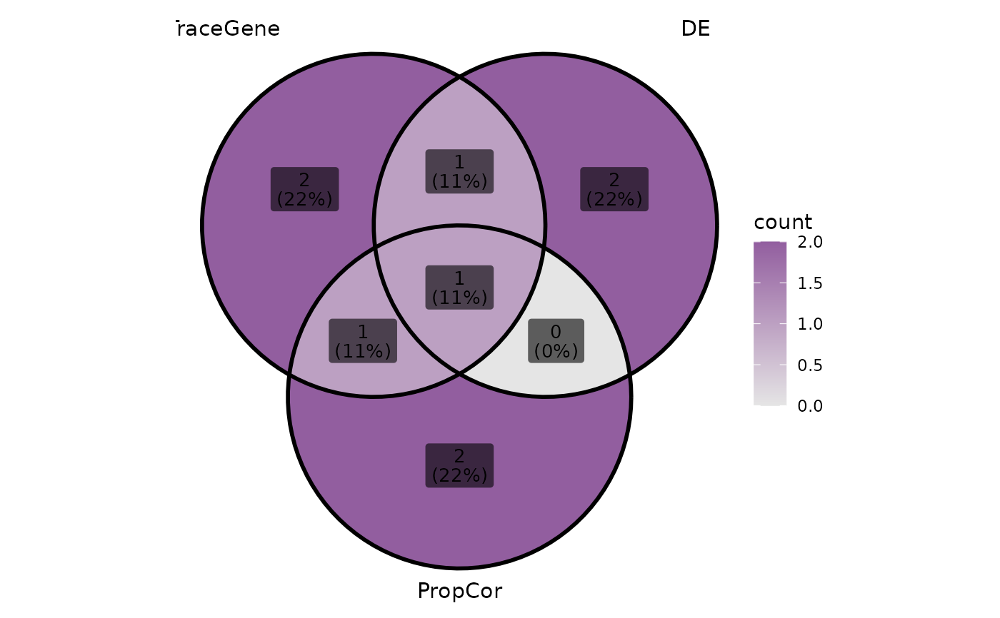
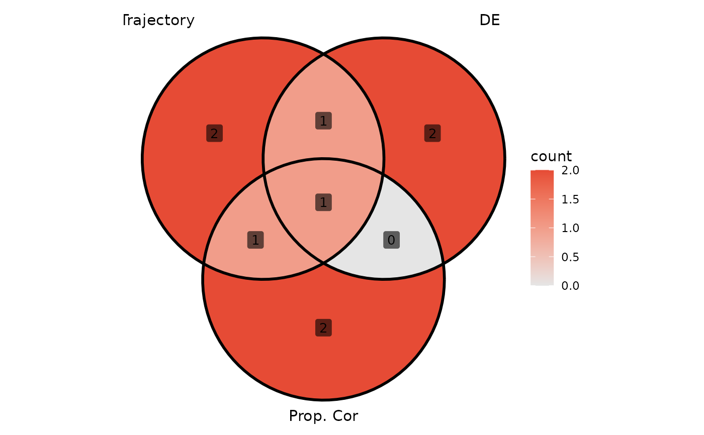
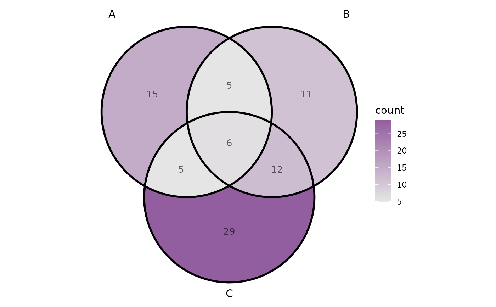
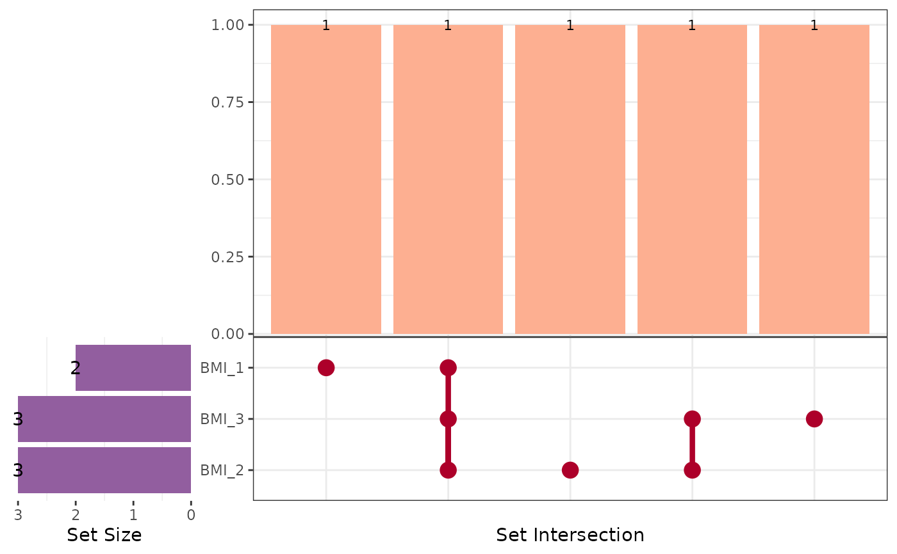

Visualise intersections using Venn diagrams and UpSet plots.
Accepts either a named list of element vectors (e.g. gene names)
or a data.frame with binary indicator columns.
For data frames, set levels = NA to visualise missing-value patterns
without modifying the input data.
Usage
plt_upset(
data,
vars = NULL,
levels = c("Yes", "yes"),
colors = NULL,
output = c("both", "venn", "upset", "data", "all"),
label = c("both", "count", "percent", "none"),
label_geom = c("label", "text"),
label_color = "black",
label_size = 3.5,
label_alpha = 0.6,
venn.fill = c("gradient", "gradient_rev", "category", "none"),
venn.alpha = 0.5,
edge.color = "grey30",
edge.size = 1,
set.name.size = 4,
set.labels = NULL
)Arguments
- data
Input data in one of two formats:
- Named list
Each element is a character/numeric vector of set members (e.g. gene names). Names become set labels. Example:
list(TraceGene = c("A","B"), DE = c("B","C")). When a list is provided,varsandlevelsare ignored.- Data frame
A data.frame with binary indicator columns specified by
vars. Membership is determined bylevels.
- vars
Character vector of column names to intersect. Required when
datais a data.frame; ignored whendatais a list.- levels
Vector of values indicating membership (e.g.
c("Yes", "yes", "1")). UseNAto treat missing values as set members. Defaultc("Yes", "yes"). Ignored whendatais a list.- colors
Character vector. For UpSet: 3 colours for
c(sets_bar, top_bar, matrix_dots). For Venn: colour(s) used in the fill gradient or as category colours (seevenn.fill). Default usespal_lancet.- output
What to return:
"venn"Venn diagram only (ggplot).
"upset"UpSet plot only (non-zero intersections).
"both"(default) Combined Venn + UpSet side by side.
"data"Data frame with
intersect_groupcolumn."all"Named list with all plots and data.
- label
What to show inside each region of the Venn diagram:
"both"(count + percent, default),"count","percent", or"none".- label_geom
Geom for labels:
"label"(with background box, default) or"text"(plain text).- label_color
Color of the label text. Default
"black".- label_size
Font size of the labels. Default
3.5.- label_alpha
Alpha of the label background (only for
label_geom = "label"). Default0.6.- venn.fill
How to fill the Venn regions. One of:
"gradient"(default) Continuous fill by count, gradient from grey90 to
colors[1]."gradient_rev"Reversed continuous fill by count, gradient from
colors[1]to grey90 (large overlaps appear lighter)."category"Each set gets a distinct fill colour from
colors; region alpha encodes overlap."none"No fill (transparent).
- venn.alpha
Alpha for the set regions when
venn.fill = "category". Default0.5.- edge.color
Color of the set boundary lines. Default
"grey30".- edge.size
Line width of the set boundaries. Default
1.- set.name.size
Font size for set names around the Venn. Default
4.- set.labels
Named character vector to rename sets in the plot. Names = original set names, values = display labels. e.g.
c(TraceGene = "Trajectory", PropCor = "Proportion Cor"). Unmatched names keep the original. DefaultNULL(no renaming).
Note
Requires ggVennDiagram and optionally aplot (for combined
layout). Install with pak::pak(c("ggVennDiagram", "aplot")).
See also
Other plot:
PlotButterfly(),
PlotButterfly2(),
PlotRankCor(),
plt_cat(),
plt_con(),
plt_dist(),
plt_sankey()
Examples
# ---- List input (most convenient) ----
gene_sets <- list(
TraceGene = c("TP53","MDM2","EGFR","BRCA1","MYC"),
DE = c("EGFR","BRCA1","KRAS","PIK3CA"),
PropCor = c("BRCA1","MYC","APC","PTEN")
)
plt_upset(gene_sets, output = "venn")

plt_upset(gene_sets, output = "venn",
set.labels = c(TraceGene = "Trajectory", PropCor = "Prop. Cor"),
label = "count", colors = "#E64B35")

# ---- Data frame input ----
df <- data.frame(
A = sample(c("Yes","No"), 100, TRUE, c(0.3, 0.7)),
B = sample(c("Yes","No"), 100, TRUE, c(0.4, 0.6)),
C = sample(c("Yes","No"), 100, TRUE, c(0.5, 0.5))
)
plt_upset(df, vars = c("A","B","C"), output = "venn",
label = "count", label_geom = "text")

# ---- Missing-value UpSet plot ----
bmi <- data.frame(
BMI_1 = c(22.1, NA, 24.3, 25.4, NA, 27.6),
BMI_2 = c(NA, 23.2, NA, 25.4, NA, 27.6),
BMI_3 = c(22.1, 23.2, NA, NA, NA, 27.6)
)
p_missing <- plt_upset(
bmi,
vars = c("BMI_1", "BMI_2", "BMI_3"),
levels = NA,
output = "upset"
)
p_missing

# ---- ToyData clinical cohort ----
if (requireNamespace("ToyData", quietly = TRUE) &&
requireNamespace("ggVennDiagram", quietly = TRUE)) {
oc0 <- ToyData::oc0
plt_upset(
oc0,
vars = c("BMI_1", "BMI_2", "BMI_3"),
levels = NA,
output = "upset"
)
}
 if (FALSE) { # \dontrun{
ggplot2::ggsave("bmi-missing-upset.pdf", p_missing,
width = 6.5, height = 4.5)
} # }
if (FALSE) { # \dontrun{
ggplot2::ggsave("bmi-missing-upset.pdf", p_missing,
width = 6.5, height = 4.5)
} # }